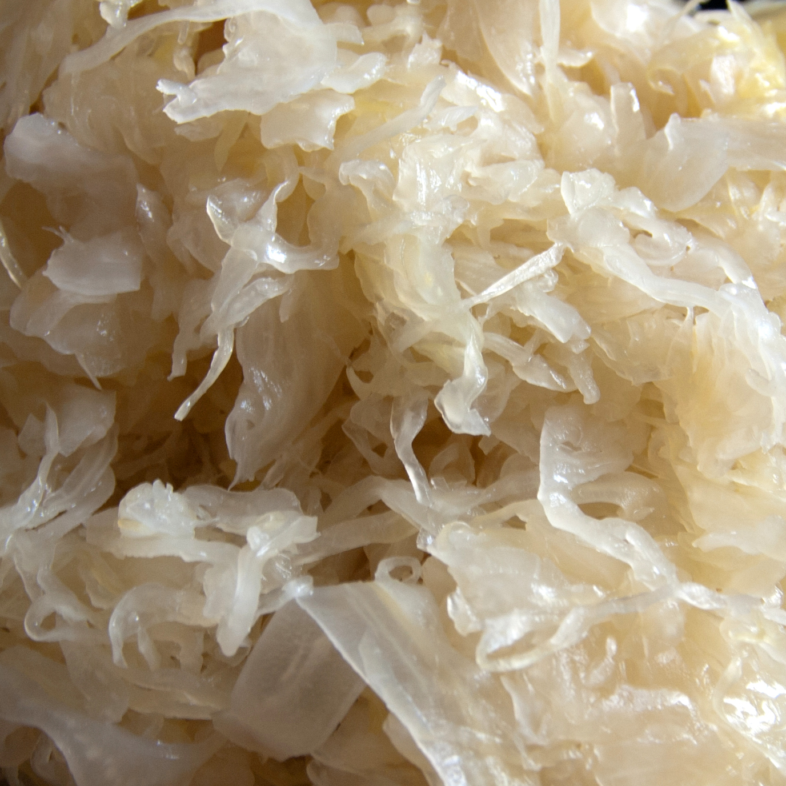

Sauerkraut Recipe

Pickled Cabbage
Great way to store cabbage for the long winter, tastes great in a German Chocolate cake as well as on top of a frank.
Ingredients:
- Sauerkraut
- Caraway Seeds
- Juniper Berries
- Oil
Steps:
- Drain Sauerkraut and squeeze rinse out to desired tartness.
- Oil in pan and cook on medium-low with Caraway seeds and Juniper berries covered.
- Good job.